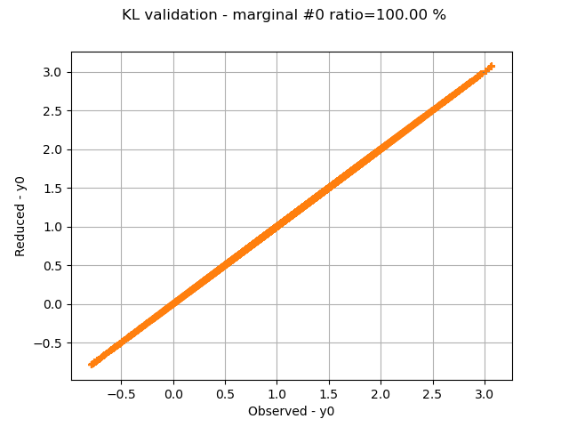
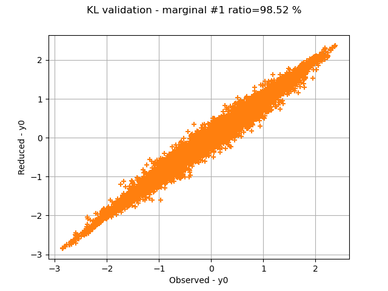
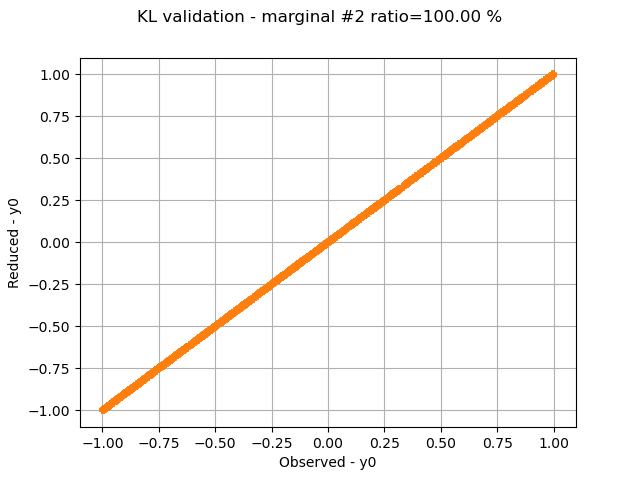
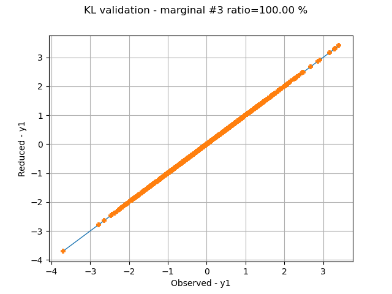

Note
Go to the end to download the full example code.
Estimate Sobol indices on a field to point function¶
In this example, we are going to perform sensitivity analysis of an application that takes fields as input and vectors as output from a sample of data:
![h: \left|
\begin{array}{ccl}
\cM_N \times (\Rset^d)^N & \rightarrow & \Rset^p \\
\mat{X} & \mapsto & \vect{Y}
\end{array}
\right.]()
This involves these steps:
Generate some input/output data matching the application
![h]()
Run the
FieldToPointFunctionalChaosAlgorithmclassValidate the Karhunen-Loeve decompositions of the inputs
Validate the chaos metamodel between the KL coefficients and the outputs
Retrieve the Sobol’ indices from
openturns.experimental.FieldFunctionalChaosSobolIndices
import openturns as ot
import openturns.experimental as otexp
from openturns.viewer import View
First build a process to generate the input data. We assemble a 4-d process from functional and Gaussian processes.
T = 3.0
NT = 32
tg = ot.RegularGrid(0.0, T / NT, NT)
f1 = ot.SymbolicFunction(["t"], ["sin(t)"])
f2 = ot.SymbolicFunction(["t"], ["cos(t)^2"])
coeff1_dist = ot.Normal([1.0] * 2, [0.6] * 2, ot.CorrelationMatrix(2))
p1 = ot.FunctionalBasisProcess(coeff1_dist, ot.Basis([f1, f2]), tg)
p2 = ot.GaussianProcess(ot.SquaredExponential([1.0], [T / 4.0]), tg)
coeff3_dist = ot.JointDistribution([ot.Uniform(), ot.Normal()])
f1 = ot.SymbolicFunction(["t"], ["1", "0"])
f2 = ot.SymbolicFunction(["t"], ["0", "1"])
p3 = ot.FunctionalBasisProcess(coeff3_dist, ot.Basis([f1, f2]))
X = ot.AggregatedProcess([p1, p2, p3])
X.setMesh(tg)
Draw some input trajectories from our process
ot.RandomGenerator.SetSeed(0)
x = X.getSample(10)
graph = x.drawMarginal(0)
graph.setTitle(f"{x.getSize()} input trajectories")
_ = View(graph)
Generate input realizations and the corresponding output from a Field->Point function
class pyf2p(ot.OpenTURNSPythonFieldToPointFunction):
def __init__(self, mesh):
super(pyf2p, self).__init__(mesh, 4, 1)
self.setInputDescription(["x1", "x2", "x3", "x4"])
self.setOutputDescription(["y"])
def _exec(self, X):
Xs = ot.Sample(X)
x1, x2, x3, x4 = Xs.computeMean()
y = x1 + x2 + x3 - x4 + x1 * x2 - x3 * x4 - 0.1 * x1 * x2 * x3
return [y]
f = ot.FieldToPointFunction(pyf2p(tg))
N = 1000
x = X.getSample(N)
y = f(x)
Run the field-vector algorithm that performs KL-decomposition of the inputs and chaos learning between the KL coefficients and the output vectors
algo = otexp.FieldToPointFunctionalChaosAlgorithm(x, y)
# 1. KL parameters
algo.setCenteredSample(False) # our input sample is not centered (default)
algo.setThreshold(4e-2) # we expect to explain 96% of variance
algo.setRecompress(
False
) # whether to re-truncate modes according to a global eigen value threshold across inputs (default)
algo.setNbModes(10) # max KL modes (default=unlimited)
# 2. chaos parameters:
bs = ot.ResourceMap.GetAsUnsignedInteger("FunctionalChaosAlgorithm-BasisSize")
ot.ResourceMap.SetAsUnsignedInteger(
"FunctionalChaosAlgorithm-BasisSize", N
) # chaos basis size
ot.ResourceMap.SetAsBool("FunctionalChaosAlgorithm-Sparse", True)
algo.run()
ot.ResourceMap.SetAsUnsignedInteger("FunctionalChaosAlgorithm-BasisSize", bs)
result = algo.getResult()
Retrieve the eigen values of each KL decomposition: we observe that each input process is represented by a different number of modes.
kl_results = result.getInputKLResultCollection()
n_modes = [len(res.getEigenvalues()) for res in kl_results]
print(f"n_modes={n_modes}")
n_modes=[2, 3, 1, 1]
Retrieve the ratios of selected variance over cumulated variance: we see that all 3 inputs are perfectly represented, and the 2nd input almost perfectly.
ratios = [res.getSelectionRatio() for res in kl_results]
print(f"ratios={ratios}")
ratios=[1.0, 0.9851877006609377, 1.0, 1.0]
Graphically validate the KL decompositions: we also see that the 2nd input appear to be less well represented than the others. Note however that the 0.98 selected/cumulated variance ratio actually means it is very good.
graphs = []
for i in range(x.getDimension()):
validation = ot.KarhunenLoeveValidation(x.getMarginal(i), kl_results[i])
graph = validation.drawValidation().getGraph(0, 0)
graph.setTitle(f"KL validation - marginal #{i} ratio={100.0 * ratios[i]:.2f} %")
View(graph)
graphs.append(graph)
- 
- 
- 
- 
On the 2nd marginal we can filter out the points inside the 99% level-set to see that actually only a few points out of N are actually outliers.
graph = graphs[1]
data = graph.getDrawable(1).getData()
normal = ot.NormalFactory().build(data)
log_pdf = normal.computeLogPDF(data).asPoint()
l_pair = [(log_pdf[i], data[i]) for i in range(len(data))]
l_pair.sort(key=lambda t: t[0])
index_bad = int(0.01 * len(data)) # here 0.01 = (100-99)%
beta = l_pair[index_bad][0]
gnorm = normal.drawLogPDF(data.getMin(), data.getMax())
bad = [l_pair[i][1] for i in range(index_bad + 1)]
c = ot.Cloud(bad)
c.setPointStyle("bullet")
graph.setDrawable(c, 1)
dr = gnorm.getDrawable(0)
dr.setLevels([beta])
dr.setLegend("99% level-set")
graph.add(dr)
_ = View(graph)
Inspect the chaos quality: residuals and relative errors. The relative error is very low; that means the chaos decomposition performs very well.
print(f"residuals={result.getFCEResult().getResiduals()}")
print(f"relative errors={result.getFCEResult().getRelativeErrors()}")
residuals=[0.000223921]
relative errors=[1.44099e-08]
Graphically validate the chaos result: we can see the points are very close to the diagonal; this means approximated points are very close to the learning points.
modes = result.getModesSample()
metamodel = result.getFCEResult().getMetaModel()
output = result.getOutputSample()
metamodelPredictions = metamodel(modes)
validation = ot.MetaModelValidation(output, metamodelPredictions)
r2Score = validation.computeR2Score()
print(f"R2={r2Score}")
graph = validation.drawValidation()
graph.setTitle(f"Chaos validation - R2={r2Score}")
_ = View(graph)
R2=[0.999986]
Perform an evaluation on a new realization and ensure the output is close to the evaluation with the reference function
metamodel = result.getFieldToPointMetaModel()
x0 = X.getRealization()
y0 = f(x0)
y0hat = metamodel(x0)
print(f"y0={y0} y0^={y0hat}")
y0=[6.01011] y0^=[6.00689]
Retrieve the first order Sobol’ indices The preponderant variables are x2, x4 whereas x1, x3 have a low influence on the output
sensitivity = otexp.FieldFunctionalChaosSobolIndices(result)
sobol_0 = sensitivity.getFirstOrderIndices()
print(f"first order={sobol_0}")
first order=[0.066632,0.441135,0.0953934,0.275428]
Retrieve the total Sorder obol’ indices The x3,x4 variables have total order indices significantly different than their first order indices counterpart meaning they interact with other variables
sobol_0t = sensitivity.getTotalOrderIndices()
print(f"total order={sobol_0t}")
total order=[0.0902712,0.465189,0.193238,0.372786]
Draw the Sobol’ indices
graph = sensitivity.draw()
view = View(graph)
View.ShowAll()
Reset default settings
ot.ResourceMap.Reload()
Total running time of the script: (0 minutes 6.767 seconds)